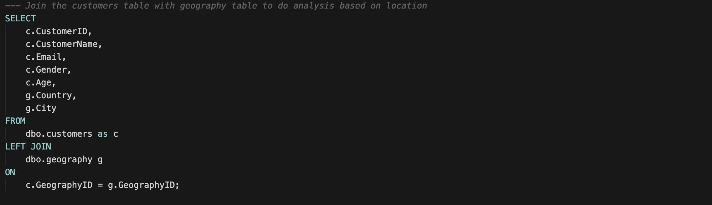
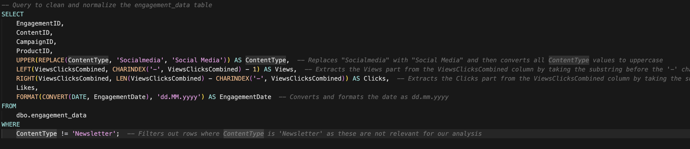
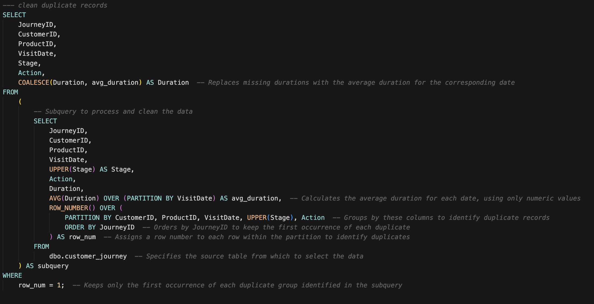

Market Analytics on Ecommerce Platform
Problem
An online retail bussiness company is facing reduced customer engagement and conversion rates despite launching several new online marketing campaigns.
Key Points:
- Reduced Customer Engagement: The number of customer interactions and engagement with the site and marketing content has declined.
- Decreased Conversion Rates: Fewer site visitors are converting into paying customers.
- High Marketing Expenses: Significant investments in marketing campaigns are not yielding expected returns.
- Need for Customer Feedback Analysis: Understanding customer opinions about products and services is crucial for improving engagement and conversions.
Goal
The project aims to connect campaign performance, engagement behavior, and customer feedback to improve commercial outcomes.
- Increase conversion rates by identifying weak funnel periods and improving campaign targeting.
- Enhance customer engagement by finding which content types create stronger interaction.
- Improve customer feedback scores by turning mixed or negative experiences into positive outcomes.
Data Source
The project dataset is stored in SQL Server, and a full backup file is available for restore.
- Backup file (.bak): MarketingAnalytics.bak
Tables
- customers: Stores master customer profile data and links each customer to a location.
- geography: Location dimension table used for geographic slicing and reporting.
- products: Product dimension table used to evaluate product-level conversion and pricing performance.
- engagement_data: Records campaign/content interactions and engagement signals across channels.
- customer_journey: Captures customer funnel progression and behavioral steps before conversion.
- customer_reviews: Stores raw customer feedback for satisfaction and sentiment analysis.
Data Cleaning
The data cleaning process focused on making the dataset consistent, analysis-ready, and reliable for dashboard reporting.
-
Integrated customer and location data: Merged customer profiles with country/city information so performance can be analyzed by region while keeping full customer coverage.

-
Created clearer product groupings: Converted raw product prices into simple pricing tiers (Low, Medium, High) to make comparisons and storytelling easier.

-
Standardized review text quality: Cleaned formatting issues in review text (such as extra spaces) to improve downstream sentiment and text analysis quality.

-
Normalized engagement fields: Unified inconsistent content labels, separated combined engagement values into distinct metrics, standardized date format, and filtered out non-relevant records.

-
Resolved journey data quality issues: Removed duplicate journey events and filled missing duration values with reasonable reference values to reduce funnel analysis distortion.

Sentiment Analysis
The review sentiment score is grouped into four buckets so stakeholders can quickly interpret intensity levels.
| Sentiment Bucket | Score Rule | Interpretation |
|---|---|---|
| 0.5 to 1.0 | score >= 0.5 | Strongly positive sentiment |
| 0.0 to 0.49 | 0.0 <= score < 0.5 | Mildly positive sentiment |
| -0.49 to 0.0 | -0.5 <= score < 0.0 | Mildly negative sentiment |
| -1.0 to -0.5 | score < -0.5 | Strongly negative sentiment |
The final sentiment label combines text sentiment direction with star rating to better reflect business context.
| Sentiment Category | Rule Summary | Business Meaning |
|---|---|---|
| Positive | Positive or neutral text with high rating (4-5) | Clearly satisfied customer experience |
| Negative | Negative or neutral text with low rating (1-2) | Clear dissatisfaction requiring attention |
| Neutral | Neutral text with mid rating (3) | No strong positive or negative signal |
| Mixed Positive | High rating with negative text, or low rating with positive text (positive-leaning conflict) | Customer outcome is acceptable, but comments show specific concerns |
| Mixed Negative | Low rating with positive text, or mid rating with negative text (negative-leaning conflict) | Potential friction points that may hurt retention if unresolved |
Code Reference: customer_reviews_enrichment.py
Power BI Dashboard
This section embeds the Power BI dashboard for interactive exploration.
Dashboard Insights
Overview Page
Decreased Conversion Rates:
- Conversion rates remained relatively stable in the first half of the year at around 10%, followed by a noticeable decline in July and August. September shows a sharp, short-term spike, likely driven by a specific campaign or promotional activity, as the rate quickly returned to baseline in October. A further investigation should be implemented in July and October.
Reduced Customer Engagement:
- There is a decline in overall social media engagement, with views dropping throughout the year.
- While clicks and likes are low compared to views, the click-through rate stands at 6.17%, meaning that engaged users are still interacting effectively based on E-commerce knowledge.
Customer Feedback Analysis:
- Customer ratings have remained consistent, averaging around 3.66 throughout the year.
- Although stable, the average rating is below the target of 4.0, suggesting a need for focused improvements in customer satisfaction, for products below 3.5.
Conversion Rate Page
Decreased Conversion Rate
- General Conversion Trend: Conversion performance fluctuated throughout the year, with noticeable peaks in March and September, where a broader range of products achieved relatively strong conversion rates. In contrast, July and October recorded weaker overall performance (2.94% and 4.48% respectively). This decline appears to be associated with narrower promotional coverage and lower transaction volume.
- High-Performing Product Categories: In peak months such as March and September, several products consistently demonstrated stronger conversion performance, including: Fitness Tracker, Dumbbells, Cycling Helmet and climbing Robe. However, in July and October, these categories either received limited campaign support or experienced reduced traffic contribution, which may have constrained their overall impact on monthly performance.
Customer Engagement Page
Declining Views and low interaction:
- Views have a consistent decline until September, then remain stable. Clicks and likes remained consistently low compared to views, suggesting the need for more engaging content or stronger calls to action
Content Type Performance:
- Traffic across all content types peaked in Q1 and gradually declined toward mid-year before partially Traffic across all content types peaked in Q1 and gradually declined toward mid-year before partially recovering in Q4. Blog content drives the highest volume but is also the most volatile, while social media traffic appears relatively stable throughout the year. The mid-year traffic decline likely contributed to the overall drop in conversion performance during July and August.
Feedback Page
Declining Views and low interaction:
- The majority of customer reviews are in the higher ratings, with 154 reviews at 4 stars and 138 reviews at 5 stars, indicating overall positive feedback. Lower ratings (1-2 stars) account for a smaller proportion, with 27 reviews at 1 star and 60 reviews at 2 stars.
Sentiment Analysis:
- Positive sentiment dominates with 292 reviews, reflecting a generally satisfied customer base. Negative sentiment is present in 12 reviews, with a smaller number of mixed and neutral sentiments, suggesting some areas for improvement but overall strong customer approval.
- The presence of mixed positive and mixed negative sentiments suggests that there are opportunities to convert those mixed experiences into more clearly positive ones, potentially boosting overall ratings. Addressing the specific concerns in mixed reviews could elevate customer satisfaction.
Recommendations
-
Increase Conversion Rates:
- Target High-Performing Product Categories: Focus marketing efforts on products with demonstrated high conversion rates, such as Surfboard, Hockey Stick, Cycling Helmet and climbing rope. Implement seasonal promotions or personalized campaigns during peak months (e.g., March and September) to capitalize on these trends.
-
In weak-performance months, two strategies can be considered:
- Growth-Oriented Strategy: If the company aims to gain market share and strengthen competitive positioning, launching targeted campaigns for historically high-performing products may help stimulate demand and capture incremental growth during slower periods.
- Cost-Control Strategy: If the priority is profitability and risk management, reducing overall marketing spend during low-demand months may help control costs and protect margins, particularly when traffic volume and conversion stability are limited.
-
Enhance Customer Engagement:
- Revitalize Content Strategy: To turn around declining views and low interaction rates, experiment with more engaging content formats, such as interactive videos or user-generated content. Additionally, boost engagement by optimizing call-to-action placement in social media and blog content, particularly during historically lower-engagement months (July to September).
-
Improve Customer Feedback Scores:
- Address Mixed and Negative Feedback: Implement a feedback loop where mixed and negative reviews are analyzed to identify common issues. Develop improvement plans to address these concerns. Consider following up with dissatisfied customers to resolve issues and encourage re-rating, aiming to move average ratings closer to the 4.0 target.
Drawbacks
This analysis is primarily conversion-rate-driven. In practice, Average Order Value (AOV) should also be included to evaluate commercial impact more completely. However, because order value data was unavailable in the current dataset, the analysis scope was limited to conversion-focused insights.